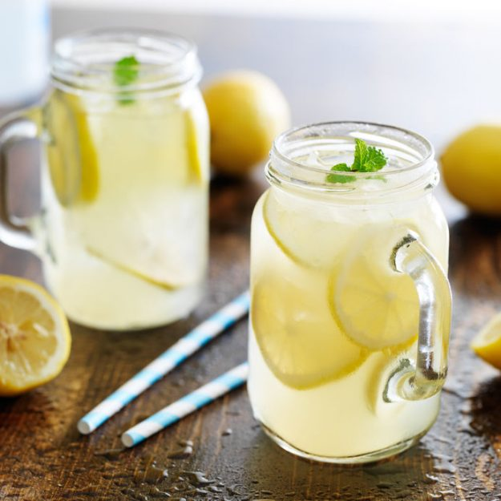

Best Lemonade Ever

Description
When life gives you lemons, make the Best Lemonade Ever!
This aptly named recipe is as good as it gets: Sweet, tart, easy to throw
together, and oh-so refreshing. Sweeten your day with our top-rated
lemonade recipe (and get our best lemonade serving and storage tips).
Ingredients
- 1 ¾ cups white sugar
- 1 cup water
- 9 medium lemons, or more as needed
- 7 cups ice-cold water
- ice as needed
Steps
-
Combine sugar and 1 cup water in a small saucepan. Stir to dissolve
sugar while mixture comes to a boil. Set aside to cool slightly.
-
Meanwhile, roll lemons around on your counter to soften. Cut in half
lengthwise, and squeeze into a liquid measuring cup. Add pulp to the
juice, but discard any seeds. Continue juicing until you have 1 1/2 cups
fresh juice and pulp.
-
Pour 7 cups ice-cold water into a pitcher. Stir in lemon juice and pulp,
then add simple syrup to taste. Add ice.